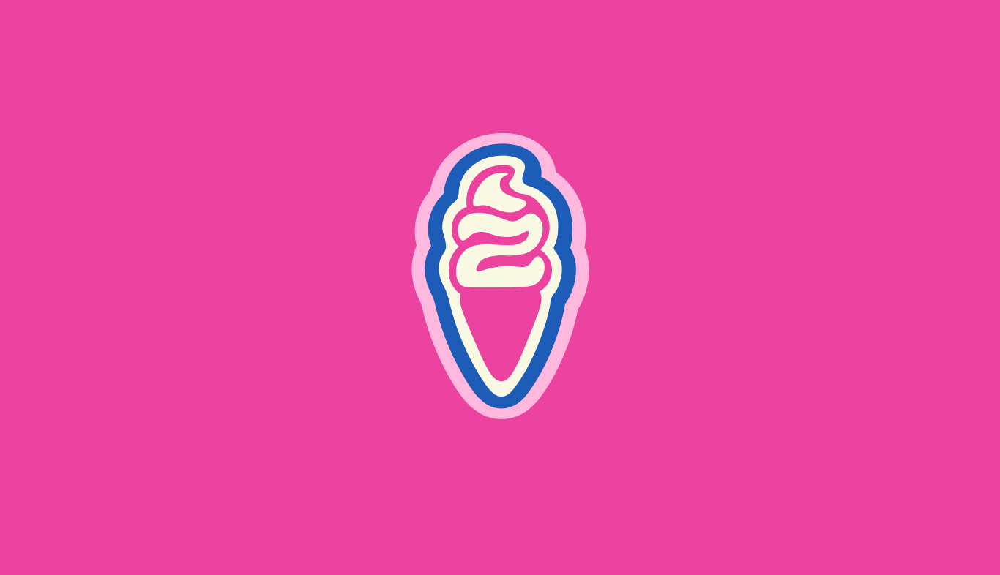
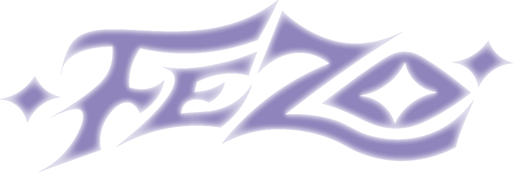
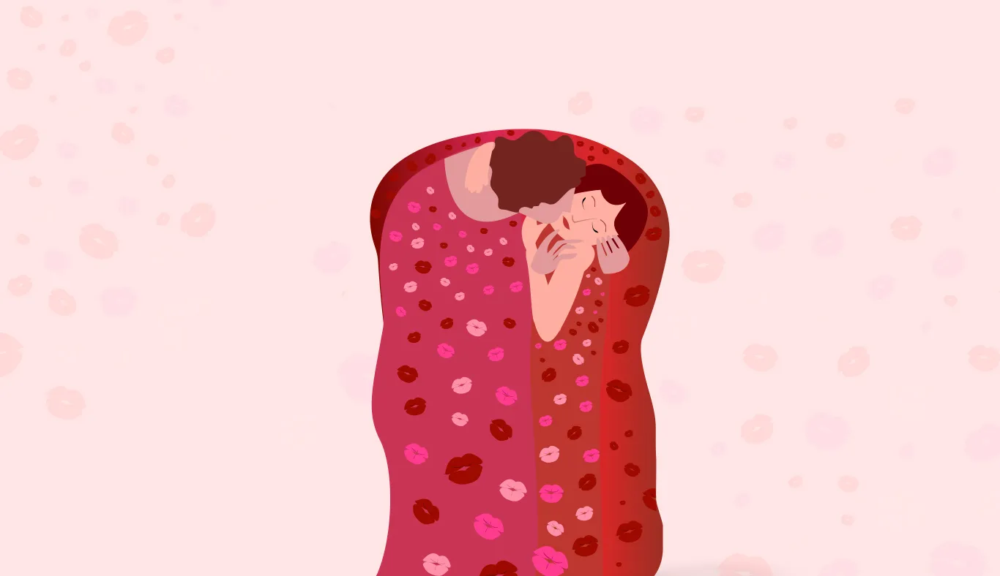
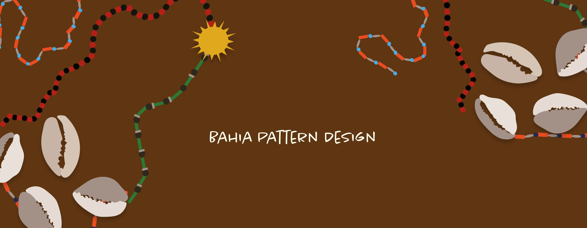

01
Redesign Sorveteria Zorzo
Identidade Visual
Ver mais

Direção de arte, branding e identidades visuais que unem
estratégia, conceito e sensibilidade estética.
Criação de conceitos visuais que orientam a comunicação de marcas, campanhas e projetos, garantindo unidade estética e narrativas visuais que fortalecem o posicionamento.
Desenvolvimento de identidades visuais estratégicas que traduzem a essência da marca em sistemas visuais consistentes, memoráveis e preparados para diferentes pontos de contato.
Planejamento e desenvolvimento de conteúdos visuais para redes sociais, alinhando estratégia, identidade e consistência para fortalecer a presença digital da marca.



Direção & Design
Olá! Me chamo Fernanda Zorzo e sou diretora de arte e designer visual brasileira. Desenvolvo identidades visuais e projetos de comunicação que unem estratégia, conceito e direção criativa para construir marcas com personalidade.
Minha abordagem parte da ideia de que o design vai além da estética: ele organiza narrativas, comunica valores e cria conexões. Busco desenvolver sistemas visuais consistentes, expressivos e atemporais, sempre considerando o contexto, a cultura e a intenção por trás de cada projeto.
Tenho interesse especial por tipografia, fotografia, colagem digital e direção de arte, com referências que transitam entre moda, música, design editorial e cultura contemporânea. Cada projeto é uma oportunidade de transformar ideias em experiências visuais autênticas e memoráveis.